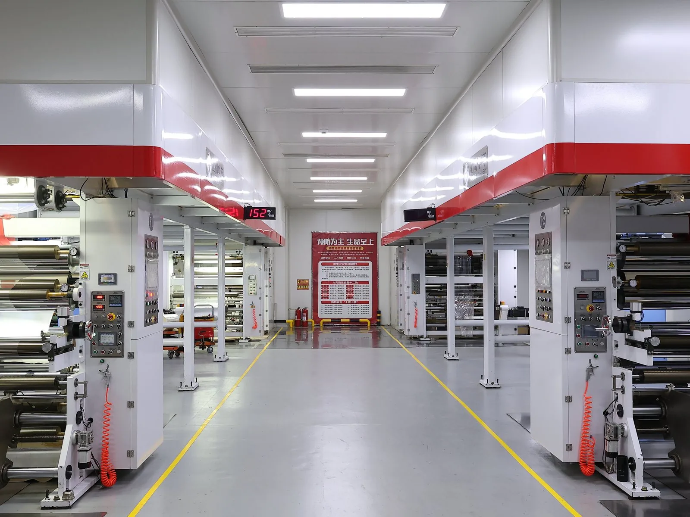

Gravure printing engraves one cylinder per colour. That tooling cost is what makes it the cheapest route per pouch at volume, and what makes it the most stable route for a design that repeats for years.

Sample shown for format reference only; any branding on the sample belongs to its respective owner. Production uses your own artwork and specifications.
Gravure printing runs on the same pouch formats as digital: stand-up, flat bottom, spouted, shaped and roll film.
The economics are simple in outline and specific in practice. Each colour needs an engraved cylinder; those cylinders are a one-time cost tied to the design and the print repeat. Spread across a large order the cost per pouch becomes small, which is why established products with a settled design are printed by gravure. Spread across a small order it does not, which is why launches usually start elsewhere.
What gravure buys at volume is consistency. Ink is transferred from engraved cells in a controlled way, so a brand colour repeats across runs and across years, and large solid areas and fine gradients print predictably. For a product sold in several markets where the pack must look identical everywhere, that repeatability matters more than the per-unit headline.
The method also suits heavy coverage. Full-surface designs, dense metallised effects and large dark panels are easier to hold on gravure than on a short-run digital press, and the wider web and higher running speed mean large orders are produced in fewer passes.
The practical decision is therefore not digital versus gravure in the abstract, but where the design and the volume stand. A pack that will not change for a year and ships by the container is a gravure candidate. A pack with three seasonal variants at a fraction of that volume is not. We quote the same specification both ways when the answer is genuinely unclear.
Structures are chosen against barrier needs, shelf life, filling method and the destination market.
Indicative ranges for planning. Final thickness, size and structure are confirmed per order.
| Printing Method | Gravure printing with one engraved cylinder per colour |
|---|---|
| Colours | Multi-colour gravure including spot colours; cylinder set tied to the design |
| Order Profile | Suited to large repeat volumes with a fixed design |
| Finishes | Gloss, matte or soft-touch lacquer, with registered effects where required |
| Formats | Stand-up, flat bottom, spouted, shaped pouches and roll film |
| Thickness | Structure-dependent, set by product, shelf life and filling method |
| Applications | Established brands, container-scale orders, bulk and food service packs |
| Customization | Size, structure, closures, finishing and artwork |
Gravure printing is the method described on this page. It is chosen where the design is fixed and the volume repeats, because cylinder cost is carried by the order and the colour stays consistent across runs. Digital printing is the better route for short runs, multiple designs and new launches.
Gravure orders are set up around repeat volume because cylinder cost is part of the route. The workable minimum depends on the number of colours, the print repeat and the pouch specification rather than on a single number, so we quote against your artwork and annual volume. Where a first order is too small for gravure, we will say so and quote digital instead.
The points buyers usually check before a first order.
When the cylinder cost is spread across enough pouches. The crossover depends on the number of colours, the print repeat and the order quantity, so it is calculated per project rather than quoted as a fixed number. We will show both routes when the answer is close.
Yes. Cylinders belong to a design and are reused when that design repeats, which is why the per-pouch cost falls on subsequent orders. A design change means a new cylinder set.
Spot colours are mixed to the artwork reference and held across runs. For critical brand colours we confirm against an approved proof or sample rather than relying on screen preview.
Yes, with inks and lacquers rated for the process. The structure and the print system are specified together for sterilised or hot-filled packs.
Then digital printing is the honest recommendation, because cylinder cost would dominate the order. We quote the same specification on the digital route so you can compare the full order cost rather than the per-pouch price.
The short-run route: no cylinder cost, multiple designs in one order.
Valve and zipper coffee packs at retail and bulk volume.
Flat bottom pouches with a wide premium front panel.
Gravure or digital printed film for automatic packaging lines.
Send your artwork, colour count and annual volume — we will confirm whether gravure or digital gives the better total cost.